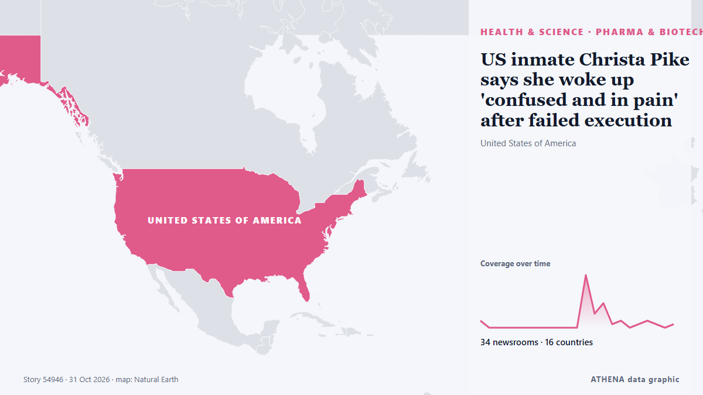

US inmate Christa Pike says she woke up 'confused and in pain' after failed execution

It is Pike's first public statement since she survived an execution attempt by lethal injection in September. من BBC News
نشرته بشكل مستقل 34 مصدرًا في 16 دولة منذ 29 أكتوبر، وأول من نشره The Independent؛ والتغطية تتراجع. يقدّر ATHENA الخطر بأنه متزايد (4.2/10)، ويعود ذلك أساسًا إلى خطورة الضرر الموصوف ونطاقه الجغرافي والقطاعي. الثقة 90٪ (مرتفعة)، وعدد المصادر المستقلة المؤكِّدة: 34، بمتوسط موثوقية للمصادر يبلغ 72٪. من نقل الخبر: 7 وسائل إعلام في المملكة المتحدة · United Kingdom, 4 وسائل إعلام في أستراليا · Australia, 3 وسائل إعلام في أيرلندا · Ireland. امتدت التغطية من 29 أكتوبر إلى 31 أكتوبر، على مدى 46 ساعة.
لماذا يهم: قد تغيّر التطورات الصحية والعلمية مخاطر الصحة العامة وأولويات البحث والتنظيم.
ما الذي تغيّر: 34 تقارير جديدة من 33 غرف أخبار خلال 24 ساعة حتى 31 أكتوبر.
تُعرض العناوين بالإنجليزية كما نُشرت.
نظرة سريعة
اختير وقُيِّم وكُتب وفق منهجية ATHENA المنشورة. لا يتدخل أي محرر في الأحداث بعينها. كيف يُنتَج ›
| 29 Oct 13:02 UTC | 2 |
|---|---|
| 29 Oct 15:02 UTC | 0 |
| 29 Oct 17:02 UTC | 0 |
| 29 Oct 19:02 UTC | 0 |
| 29 Oct 21:02 UTC | 0 |
| 29 Oct 23:02 UTC | 0 |
| 30 Oct 01:02 UTC | 0 |
| 30 Oct 03:02 UTC | 0 |
| 30 Oct 05:02 UTC | 0 |
| 30 Oct 07:02 UTC | 0 |
| 30 Oct 09:02 UTC | 0 |
| 30 Oct 11:02 UTC | 0 |
| 30 Oct 13:02 UTC | 15 |
| 30 Oct 15:02 UTC | 4 |
| 30 Oct 17:02 UTC | 7 |
| 30 Oct 19:02 UTC | 1 |
| 30 Oct 21:02 UTC | 2 |
| 30 Oct 23:02 UTC | 0 |
| 31 Oct 01:02 UTC | 1 |
| 31 Oct 03:02 UTC | 2 |
| 31 Oct 05:02 UTC | 1 |
| 31 Oct 07:02 UTC | 0 |
| 31 Oct 09:02 UTC | 1 |
| 29 Oct 13:19 UTC | 2.6 |
|---|---|
| 30 Oct 14:12 UTC | 4.1 |
| 30 Oct 17:45 UTC | 4.4 |
| 30 Oct 19:59 UTC | 5.0 |
| 30 Oct 21:07 UTC | 4.4 |
| 31 Oct 10:59 UTC | 4.2 |
لماذا هذه الأرقام
الأهمية
الخطر
الثقة
التغطية — من نشر الخبر ومتى
العنوان كما نُشر · يفتح الأصل- The Independent · المملكة المتحدة · United KingdomTennessee governor hints Christa Pike’s death sentence will remain despite botched execution
- SCOTUSblog · الولايات المتحدة · United StatesThe Supreme Court and what constitutes cruel and unusual punishment
- The Canadian Press (via CityNews) · كندا · CanadaChrista Pike describes constant pain in first statement since her failed execution
- Stuff · نيوزيلندا · New ZealandChrista Pike breaks silence a month after surviving failed lethal injection
- Irish Mirror · أيرلندا · IrelandChrista Pike issues statement after surviving botched execution attempts
- BBC News · المملكة المتحدة · United KingdomUS inmate Christa Pike says she woke up 'confused and in pain' after failed execution
- Sydney Morning Herald · أستراليا · Australia‘I’m deeply hurt’: Christa Pike releases first statement since botched execution
- Manchester Evening News · المملكة المتحدة · United KingdomDeath Row inmate Christa Pike breaks silence after failed execution
- Birmingham Mail · المملكة المتحدة · United KingdomDeath Row inmate Christa Pike speaks out after botched execution
- Euronews English · فرنسا · FranceChrista Pike describes 'pain in my mind and in my soul' in first statement after failed execution
- ProtoThema English ·‘I entered the execution chamber ready to die, woke up days later in pain’: Murderer Christa Pike speaks for first time
- The Independent · المملكة المتحدة · United KingdomChrista Pike breaks silence after botched execution: ‘I am searching for meaning in what happened to me’
- Indian Express · الهند · IndiaChrista Pike speaks out for first time after failed US execution, blames ‘incompetence’
- RTÉ News · أيرلندا · Ireland'Pain in my mind and soul' since failed execution - Pike
- The Guardian · المملكة المتحدة · United KingdomChrista Pike makes first public comments since failed execution: ‘There is pain in my mind and in my soul’
- Chronicle Live (Newcastle) · المملكة المتحدة · United KingdomChrista Pike's first statement after surviving botched execution
- CBC News (alternative feed) · كندا · CanadaChrista Pike says she's in 'constant pain' since surviving execution attempt
- France 24 English · فرنسا · France'Deeply hurt': Convicted murderer Christa Pike speaks out after botched execution
- MyJoyOnline · غانا · GhanaUS inmate Christa Pike says she woke up ‘confused and in pain’ after failed execution
- TheJournal.ie · أيرلندا · Ireland‘I had made my peace’: Christa Pike issues first statement since botched execution
- DW English · ألمانيا · GermanyTennessee woman Christa Pike describes pain after failed execution
- Vanguard · نيجيريا · NigeriaUS woman who survived botched execution says she’s in constant pain
- Channels TV · نيجيريا · Nigeria‘There’s Pain In My Mind And Soul,’ Says US Woman Who Survived Botched Execution
- PBS NewsHour · الولايات المتحدة · United StatesChrista Pike says she feels constant pain in first public statement since failed execution
- Punch · نيجيريا · NigeriaUS inmate who survived execution says she’s in constant pain
- The Straits Times · سنغافورة · SingaporeUS woman who survived botched execution says she’s in constant pain
- Gulf News · الإمارات العربية المتحدة · United Arab Emirates'My body hurts': US death row inmate Christa Pike speaks of agony after surviving lethal injection
- ABC News Australia · أستراليا · AustraliaChrista Pike speaks of constant pain after botched execution
- Sydney Morning Herald · أستراليا · AustraliaChrista Pike speaks after botched execution
- CNA (Channel NewsAsia) · سنغافورة · SingaporeBotched execution survivor Christa Pike says she's in constant pain
- SBS News · أستراليا · AustraliaA month after a botched execution, Christa Pike says she is still in pain
- NDTV · الهند · India'Don't Know Why I Survived': Christa Pike's First Words After Failed Execution In US
- Times of India · الهند · India'My body hurts, my soul hurts': Christa Pike after failed execution in US
- Al Jazeera English · قطر · QatarUS execution survivor Christa Pike says she is now in ‘constant pain’
- Nile Post · أوغندا · UgandaUS inmate Christa Pike says she woke up 'confused and in pain' after failed execution
- IOL · جنوب أفريقيا · South Africa'My body hurts, my soul hurts': Christa Pike speaks up after botched US execution